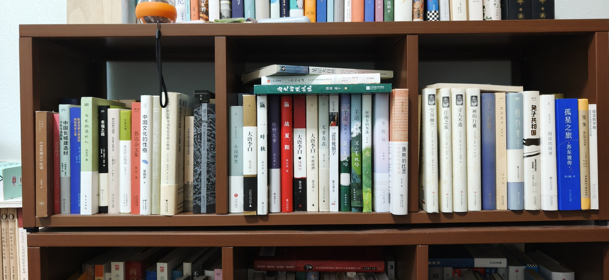

南房第二层

- 通往威根码头之路 The Road to Wigan Pier 向加泰罗尼亚致敬
- 焦循书院（人间词话）的哲学基础
- OSUX 《古文观止》化读 HEES
- 文学种子 卡夫卡遗稿集 中国长城建造时 [奥] 果麦
- 西伯利亚之夏 陀思妥耶夫斯基的
- 历史的局外人 未方出版社
- 幸福之路
- 大家小书 鲁迅作品细读 鲁迅杂文集
- 中国文化的性格 梁晓声
- 乞力马扎罗的雪
- 托尔斯泰或陀思妥耶夫斯基 HEEP 陀或托 恩妥夫斯基
- 不如注期天堂生性小事情
- 旷野 禅与摩托车维修艺术
- 张大春作品 小说稗类
- 大唐李白 张大春
- 叶秋 张大春著
- 聆听父亲 张大春
- 历史的照妖镜 烟雨萧十一面
- 战夏阳 张大春著
- Letting a Noume Jouto 笔记大自然 一念桃花源
- 大唐李白 凤凰台 张大春
- 大唐李白 将进酒 张大春
- 文章自在 张大春
- 印刻文學 認得幾個字 张大春 172 5
- 羊道 李娟 前山夏牧场 送城出版社
- 羊道 李娟 深山夏牧场
- 阿勒泰的角落
- 冬牧场 终
- 全球化中的清朝 康熙的红票 孙生火 BE
- 空谷幽兰
- 江南之旅 月2 尖
- 寻人不遇
- 禅的行囊 FRANNE2
- 传雷家书
- 植物妻子
- 兔子共和国 DOWN 果麦 WATERSHIP EX
- 阅读的故事
- 孤星之旅 ·苏东坡传 周文翰著
- 斐多 柏拉图对话录 中国网际广场出公社
- 用教学思建解决非数学问题 塑造数学脑
共 40 本书，上传于 2026-10-03 07:27:58。